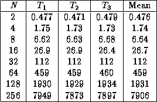

![[DBPP]](pictures//asm_color_tiny.gif)


![[Search]](pictures//search_motif.gif)
Discussion in preceding sections has emphasized analytic modeling of performance. Yet parallel programming is first and foremost an experimental discipline. The flexibility and ease of modification of software on the one hand, and the complexity of parallel computer systems on the other, mean that approaches to parallel program design based entirely on theory are rarely cost effective. The role of modeling is most often to assist in what is essentially an experimental process, by guiding experiment and explaining results.
Experimental studies can be used in early design stages to determine values for parameters used in performance models, such as computation time per grid point, average depth of a search tree, message startup cost, and message transfer costs. They can also be used after programming begins, to compare observed and modeled performance.
Next we review several sometimes subtle issues that can arise during experimental studies.
The first step in an experimental study is to identify the
data
that we wish to obtain. For example, when calibrating a
performance model we may be interested in determining the execution
time of a sequential version of our application as a function of
problem size in order to determine  . Or, we may need to measure
the execution time of a simple message-passing testbed program in
order to determine
. Or, we may need to measure
the execution time of a simple message-passing testbed program in
order to determine  and
and  .
.
Normally, experiments are performed for a range of data points---different problem sizes and/or processor counts. By maximizing the number of data points obtained, we reduce the impact of errors in individual measurements. When empirical data are used to evaluate the quality of an implementation, a range of data points also allows us to estimate the accuracy of the model and to identify regimes in which it is inadequate.
The next step in an experimental study is to design the experiments that will be used to obtain the required data. The critical issue here is to ensure that our experiments measure what we intend to measure. For example, if a program comprises an initialization step followed by a long series of iterations, and our performance model deals only with the cost of an iteration, then that is what we need to measure.
The principal challenge when performing experiments is to obtain accurate and reproducible results. Execution times can be obtained in various ways; which is best will depend on both our requirements and the facilities available on the target computer. A straightforward but potentially time-consuming approach is to incorporate code into our program that calls system timer routines to determine elapsed time. In principle, we should make these calls on every processor and then take the maximum time. However, we can often identify a reference processor that does not start or finish appreciably later or sooner than others, and measure times on this processor alone. Alternatively, we can use a profiling or tracing tool that obtains timing data automatically. We discuss specific tools in Chapter 9.
Experiments should always be repeated to verify that results are reproducible. Generally, results should not vary by more than a small amount---2 or 3 percent is a lot if one is trying to fine-tune algorithms. Possible causes of variation include the following.
Studies of variability in experimental results can help us to identify sources of error or uncertainty in our measurements. However, even when results are reproducible, we still have no assurance that they are correct. Confidence in our results can be increased by measuring the same thing several different ways and verifying that the results of these redundant measurements are consistent. For example, in addition to measuring the time taken in individual program components, we can measure the total time for the entire program.
When experimental studies are performed for calibration purposes, we fit results to the function of interest to obtain values for unknown parameters. A fit can be performed graphically by plotting data points and estimating the fit. For example, if the function is
we can plot the data points as a function of
L
and draw a straight line that fits these points. The slope
of this line will be  , and the intercept of the axis
when L=0
will be
, and the intercept of the axis
when L=0
will be  .
.
Alternatively, and more accurately, we can perform a least-squares fit of the function with the data. (Mathematical packages such as Mathematica and Matlab incorporate fitting functions.) A least-squares fit involves a minimization of the sum of the squares of the differences between the observations, obs (i) , and the corresponding function values, f (i) :
For example, when fitting the function with observations
of T
for different values of N
in order to determine the
value  , we minimize
, we minimize
When fitting to execution times for different numbers of processors, the method just described gives less weight to the (presumably smaller) times on larger numbers of processors. Yet these are typically the times of greatest interest. Hence, we can use a scaled least-squares fit in which the difference between observation and function value is scaled by the observation, as follows:
 .
. Determining Computation Time (
Determining Computation Time ( ):
):
We consider the problem of determining the computation cost per grid point in the finite difference problem. Recall that we have modeled this cost as follows (Equation 3.2):
In this equation,  is the parameter that we wish to determine,
and N
is a value that we can vary while measuring performance.
(For simplicity, we keep Z
fixed.) Table 3.2 gives
execution times measured on a Sun SPARC 2 workstation. Experiments
were performed when the machine was idle but not in single-user mode;
hence, there might have been a small amount of background activity.
Each experiment was repeated three times so that we could study
variability; the table also lists the means of each set of three
values. The repeated experiments show little variation in total
execution time.
is the parameter that we wish to determine,
and N
is a value that we can vary while measuring performance.
(For simplicity, we keep Z
fixed.) Table 3.2 gives
execution times measured on a Sun SPARC 2 workstation. Experiments
were performed when the machine was idle but not in single-user mode;
hence, there might have been a small amount of background activity.
Each experiment was repeated three times so that we could study
variability; the table also lists the means of each set of three
values. The repeated experiments show little variation in total
execution time.

Table 3.2: Execution times in milliseconds for a single time step
of the finite difference code on a Sun SPARC 2, with
Z=10
.
Figure 3.9: Simple and scaled least-squares fits of the function
to finite difference execution times on a Sun SPARC 2
workstation. Notice the use of logarithmic
scales.
Table 3.3: Execution times predicted for finite difference code on
Sun SPARC 2, with Z=10
(milliseconds).
Figure 3.9 shows simple and scaled least-squares fits of
Equation 3.2 to the data in Table 3.2. The two fits
correspond to  values of 0.0120 msec and 0.0112 msec,
respectively. The execution times predicted by the two models are
shown in Table 3.3. As expected, the simple fit is more
accurate for larger N
, while the scaled fit is better for
smaller N
; both are good enough for most practical purposes.
These results suggest that the hypothesized performance model,
values of 0.0120 msec and 0.0112 msec,
respectively. The execution times predicted by the two models are
shown in Table 3.3. As expected, the simple fit is more
accurate for larger N
, while the scaled fit is better for
smaller N
; both are good enough for most practical purposes.
These results suggest that the hypothesized performance model,  , is an adequate characterization of finite difference
computation time.
, is an adequate characterization of finite difference
computation time.
© Copyright 1995 by Ian Foster